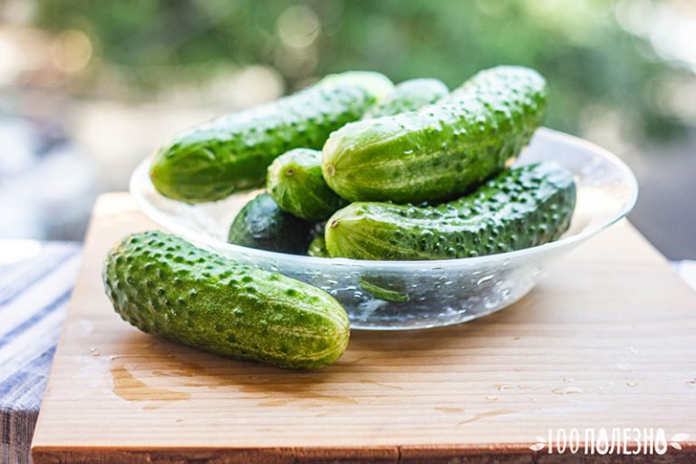

Τα αγγούρια είναι μια από τις πιο κοινές λαχανικών καλλιέργειες στον πλανήτη. Είναι ένα ετήσιο φυτό της οικογένειας σπόρους, που σε αντίθεση με τα περισσότερα λαχανικά τρώνε σε недозрелом μορφή. Όταν το στόμα νόστιμο τραγανιστά πράσινα φέτες, κανένας δεν με νοιάζει ποια είναι η χρήση αγγούρι για την υγεία. Και μάταια. Αυτό το προϊόν πρέπει να συμπεριλάβετε στη διατροφή σας σε όλους, ιδιαίτερα το καλοκαίρι.
